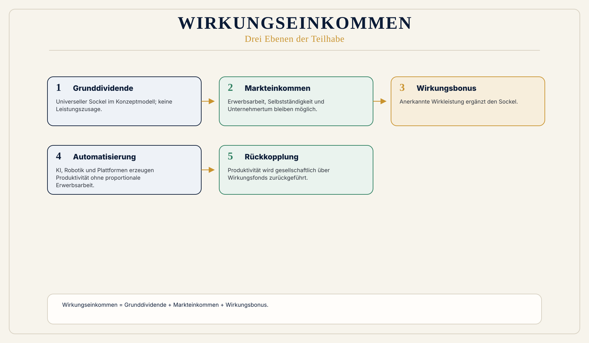
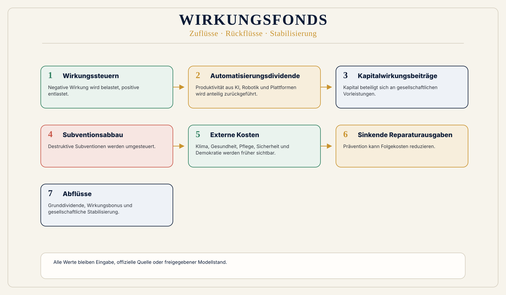

Arbeit als alleinige Basis
Das System ist so gebaut, als müsse menschliche Erwerbsarbeit die alleinige Grundlage von Einkommen, Steuern und sozialer Sicherheit bleiben.
 Wirkungsökonomie
Wirkungsökonomie
Für wen · Wirkungseinkommen
Wenn Maschinen Produktivität erzeugen, muss Produktivität gesellschaftlich zurückgekoppelt werden.
Das Wirkungseinkommen beantwortet eine zentrale Frage der automatisierten Gesellschaft: Was passiert mit Einkommen, Sicherheit und Teilhabe, wenn KI, Robotik und Automatisierung Wertschöpfung erzeugen, ohne dass Erwerbsarbeit für alle im bisherigen Umfang nötig bleibt?
Die alte Ordnung koppelt Einkommen, Würde, Steuerbasis und soziale Sicherheit an Erwerbsarbeit. Die Wirkungsökonomie löst Einkommen nicht einfach von Arbeit. Sie bindet Einkommen an Wirkung zurück.
Warum diese Perspektive wichtig ist
Konzeptstand. Das Zielmodell arbeitet mit einer Grunddividende von 2.000 Euro monatlich pro Person. Einführung, Finanzierung, Rechtsform und fiskalische Prüfung sind nicht final beschlossen. Diese Seite zeigt Wirkungslogik und Modellrechnung, keine Leistungszusage.
Das heutige System setzt Arbeit, Einkommen und Leistung zu eng gleich. Gleichzeitig erzeugen KI, Robotik, Plattformen und Automatisierung Produktivität, die nicht mehr proportional zu menschlicher Erwerbsarbeit ist.
Care, Pflege, Bildung, Prävention, Gemeinwesen, Demokratiearbeit, Kultur, ökologische Regeneration und soziale Stabilität erzeugen reale Wirkleistung. Im alten Einkommensmodell bleiben sie zu häufig unterbezahlt oder unsichtbar.
Was heute falsch läuft
Das System ist so gebaut, als müsse menschliche Erwerbsarbeit die alleinige Grundlage von Einkommen, Steuern und sozialer Sicherheit bleiben.
Automatisierte Produktivität kann steigen, ohne automatisch Sicherheit und Teilhabe zu stabilisieren.
Care, Pflege, Bildung, Gemeinwesen und Demokratiearbeit bleiben häufig unterbezahlt oder unsichtbar.
Warum Reparatur nicht reicht
Erwerbsarbeit bleibt wichtig. Sie reicht aber nicht mehr als alleinige Einkommensbasis, wenn KI, Robotik und Plattformen Produktivität erzeugen, ohne dass menschliche Arbeitszeit proportional steigt.
Das Wirkungseinkommen koppelt Produktivität gesellschaftlich zurück: Grunddividende, Markteinkommen und Wirkungsbonus bilden eine Modellarchitektur für Teilhabe und Wirkleistung.
WÖk-Verschiebung
Das Wirkungseinkommen besteht aus drei Ebenen: Grunddividende, Markteinkommen und Wirkungsbonus.
Die Grunddividende ist ein universeller Sockel von Geburt bis Tod. Im Zielmodell: 2.000 Euro pro Monat und Person. Markteinkommen bleibt zusätzlich möglich. Der Wirkungsbonus erkennt reale Wirkleistung an und bewertet nicht den Menschen, sondern die gesellschaftliche Wirkung anerkannter Tätigkeiten.
Formel: Wirkungseinkommen = Grunddividende + Markteinkommen + Wirkungsbonus.
Das Wirkungseinkommen ist nicht als ungedeckte Wunderzahlung gedacht. Produktivität, die bisher einseitig privatisiert oder als Folgekosten externalisiert wurde, wird gesellschaftlich zurückgekoppelt.
Konkreter Gewinn
Was nicht passiert
Arbeit, Markteinkommen, Selbstständigkeit, Unternehmertum und Innovation bleiben möglich.
Der Wirkungsbonus bewertet anerkannte Wirkleistung, nicht den Menschen als Person.
Alle Werte müssen als Eingabe, Quelle oder freigegebener Modellstand gekennzeichnet werden.
Wirkungspfad
Konkretes Beispiel
Ein Mensch leistet Care-Arbeit, unterstützt Bildung, stabilisiert ein Gemeinwesen oder übernimmt demokratische Arbeit. Im alten Modell erscheint das oft nicht als Einkommen. In der WÖk wird gefragt, wie diese reale Wirkleistung sichtbar und rückkoppelbar wird.
Visual
Drei Ebenen: Grunddividende + Markteinkommen + Wirkungsbonus. Zweite Grafik: Wirkungsfonds mit Zuflüssen und Auszahlungen. Dritte Grafik: Brutto vs. Netto.


Modellrechner
Alle Werte sind Eingaben oder Modellstand. Der Rechner erzeugt keine Leistungszusage.
Bruttovolumen pro Jahr = Bevölkerung × monatliche Grunddividende × 12
Beispielhaft im Zielmodell: Bevölkerung × 2.000 Euro × 12.
Netto-Finanzierungsbedarf = Bruttovolumen minus Transfers, Wirkungssteuer, Automatisierungsdividende, Kapitalwirkungsbeiträge, Subventionsabbau, internalisierte externe Kosten, vermiedene Reparaturausgaben und weitere freigegebene Modellbausteine.
Vertiefung
Die nächste Frage lautet nicht, wie diese Zielgruppe nachhaltiger wird. Sie lautet: Welche alte Steuerungslogik erzeugt das Problem, und wie verändert Wirkung die Logik selbst?
Quellenbasis / Einordnung